Equipment
The do-right, do-once setup everything else in JigSteps depends on.
Before you start
Every calculated Support Distance traces straight back to the numbers on this page, so it's worth taking your time here. Come back and adjust anything at any point — nothing here is locked in once you've saved it.
Getting a wheel-type Machine's fixed horizontal offsets right by direct measurement is genuinely awkward. Our Setup Calculator turns it into ten relatively straightforward caliper readings and does the geometry for you. It's linked again under Machines below, and links back here when you're done.
Defaults are loaded for every field except Wheel diameter, based on our own Tormek T-8. Don't grind using these defaults — they're placeholders for 'sanity-checks' only, until you enter your own measurements.
Each category below lets you add, edit, or delete as many items as you need. Every "Add New" page (except Wheels) links to a diagram showing the physical relationships to measure — always measure to the same reference point, perpendicular to each other, in the plane the support moves in.
Equipment
Machines
Add both wheel-type and flat-type grinders here — you'll be asked which kind when you tap + to add a machine; each is a slightly different setup, covered separately below.
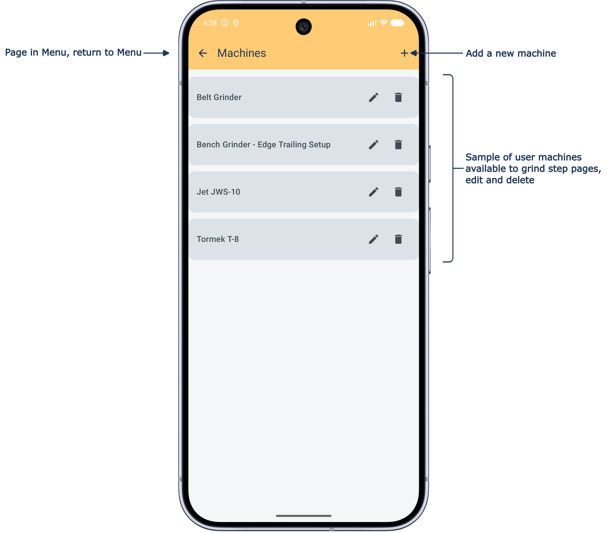
Wheel-Type
The diagrams show the relationship between the wheel shaft axis and the point this app calculates support height from ('S'), for both Edge Leading and Edge Trailing. All dimensions as oriented in the diagrams represent positive numbers.
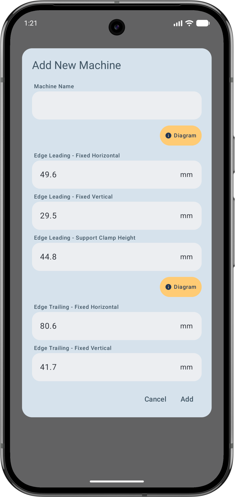
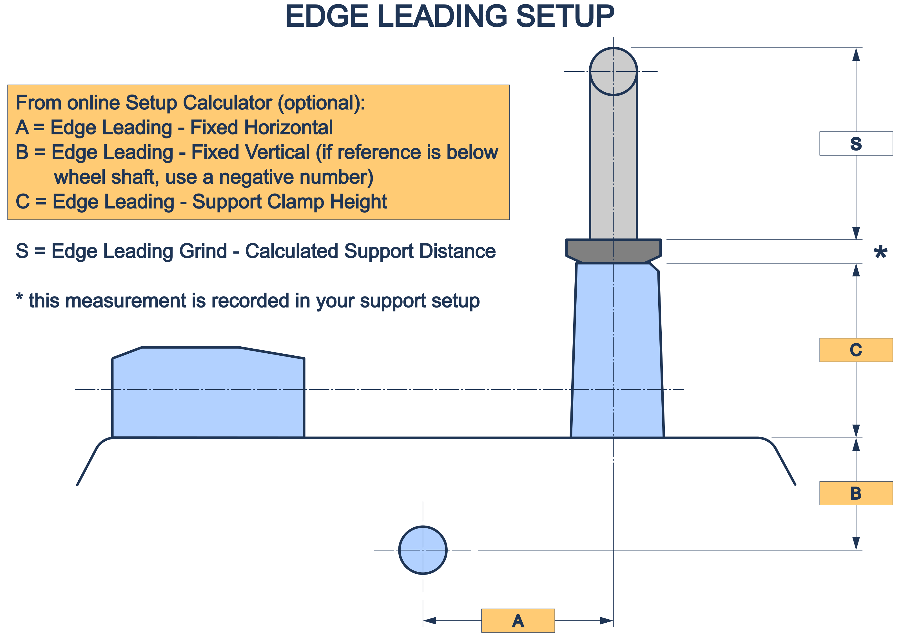
We use the top of the Adjustment Nut as the reference point wherever practicable — it's the shortest distance to measure, it's easy to set a caliper square and perpendicular against, and it's always directly accessible (an adjustment nut can otherwise cover a clamp face reference, for both support jigs (with nuts) and supports in edge trailing setups).
The Support Clamp Height (Edge Leading only) is an important distance to get right — avoid 'stacking' errors by following the logic of the Setup Calculator, and let this number be a generated result rather than direct measurement. It's also used in the too-high / too-low support warning calculation.
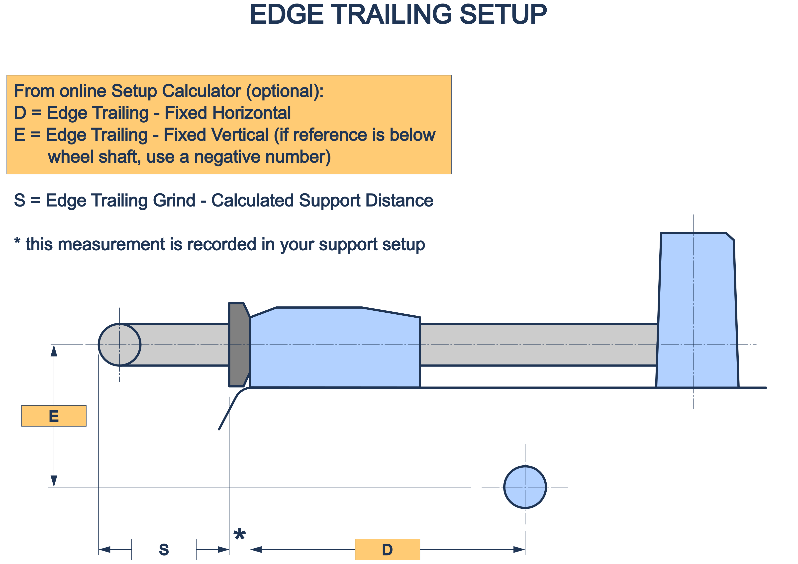
The above serves to illustrate why we use the top of the adjustment nut to measure from for the support distance 'S' — it covers the otherwise useful clamp face (this also applies if you use an FVB-type support jig).
Your grinder doesn't need to look exactly like the ones in the diagrams above — it may not have both edge-leading and edge-trailing features, and the reference point or support may be below the wheel centreline. That doesn't matter — it just needs to share the same measurable relationship to the wheel centreline.
What matters is determining the best reference point for your machine, and that your two measurements are perpendicular to each other and to the support centreline. If your equipment's geometry runs the "wrong way" relative to the diagram, you don't need different equipment — just flip the sign, using negative numbers, as in the worked example below.
Worked example — a slow-speed bench grinder is to be used for honing using paper or felt wheels. A separate mount is fixed to the bench beside and below the grinder (in this case on the 'back'-side so edge-trailing), with 'A' = 150 mm and 'B' = −100 mm (refer the Edge Trailing diagram):
Edge Leading — all fields = 0 (that is, not used)
Edge Trailing — Fixed Horizontal = 150, Fixed Vertical = −100
Flat-Type
The Add Flat / Belt Machine dialogue and diagram below show this setup is a simple affair. The Vertical Offset default is zero, meaning the reference point by default is at the top of the grinding surface. All dimensions as oriented in the diagram represent positive numbers.
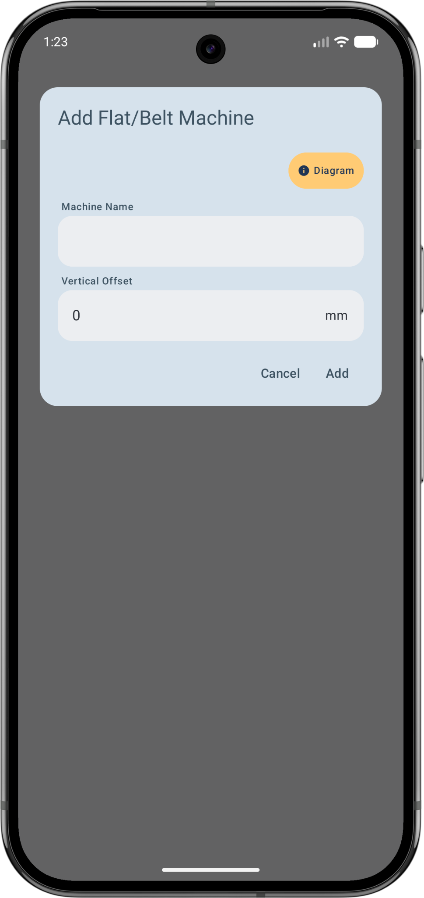
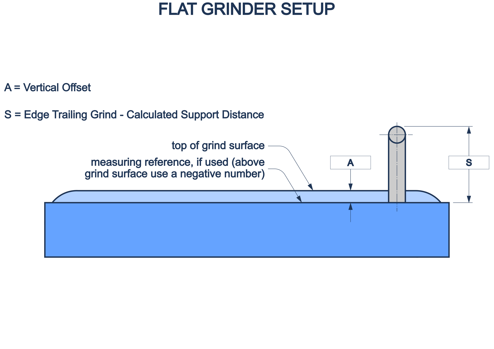
If you identify a more suitable part of your machine from which you want to measure the support height (as long as that point is measured parallel to the grinding surface), enter that as the Vertical Offset. Differing from a wheel-type machine, a point below the grinding surface is entered as a positive number (and, just in case, use a negative number for above the surface).
When a flat-type grinder is selected, the Chord grind type becomes unavailable, as this only applies to wheel-type grinders.
Wheels
Not much to say here really — it's round so it has a diameter! One convenience is provided for this item; because a bonded wheel changes diameter in use, wheel diameter can be edited directly from the grind step page, not only through the Menu.
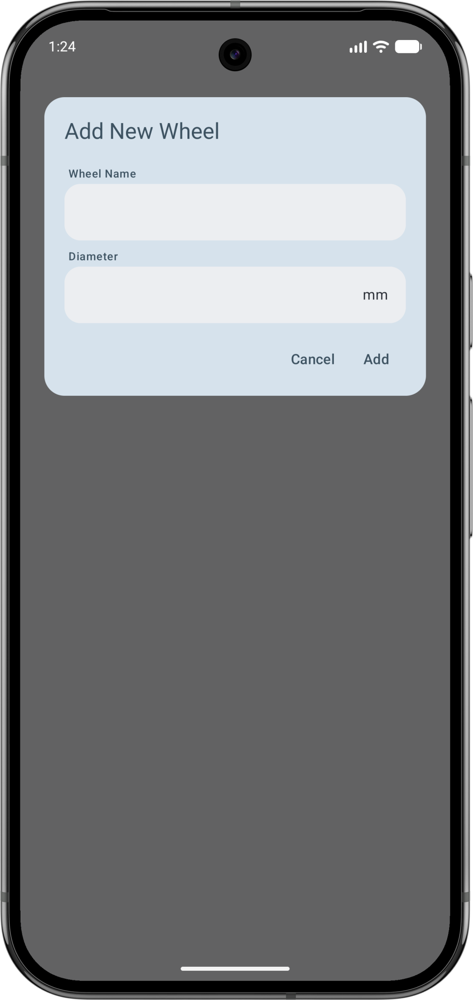
Support Jigs
Special jigs that, for the purposes of this app, convert horizontal mounts to vertical and so adding grinding flexibility (Tormek MB-102, or third-party equivalents). Available for wheel-type Edge Trailing grind steps only — if you don't have one, leave this field on the grind step page as (none). We only support calculations for the fixed part of the Tormek MB-102, not the adjustable angle part.
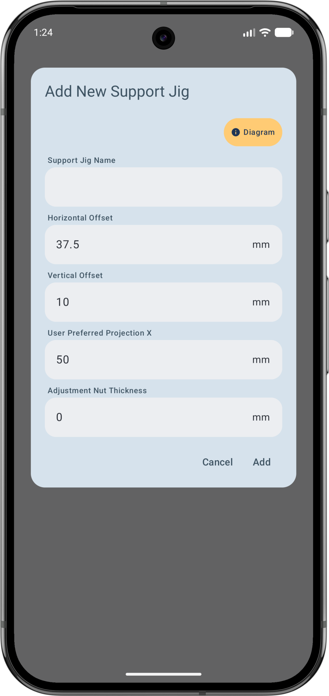
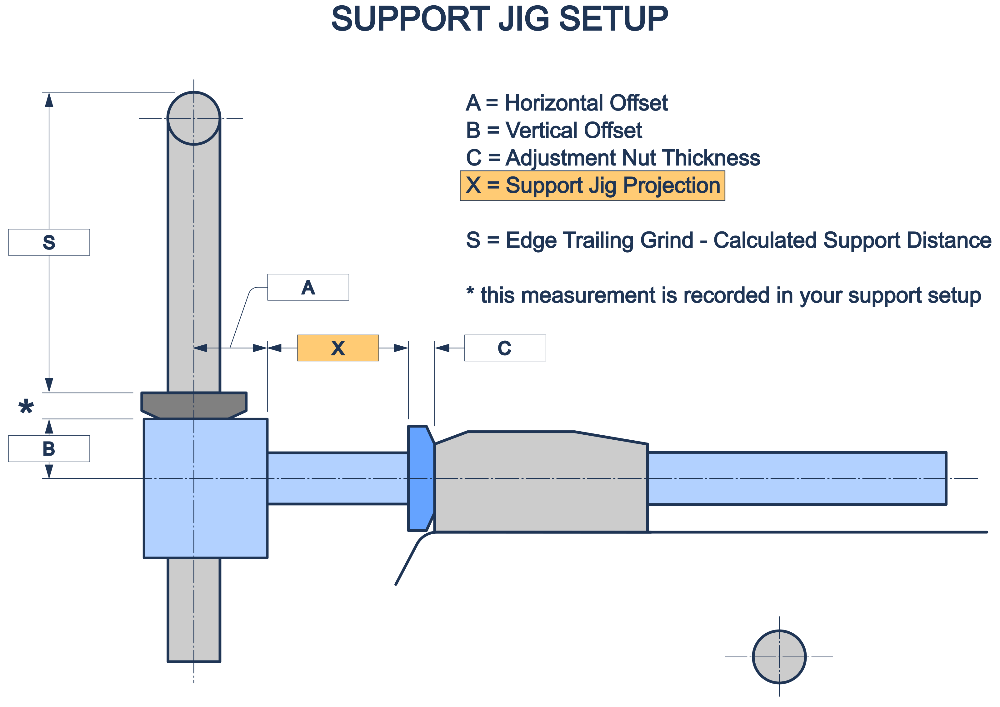
The diagram above shows the key geometry relationship of an FVB-type support jig. Horizontal Offset (A) and Vertical Offset (B) are the jig's fixed geometry, set up once here. Adjustment Nut Thickness (C) is the height of this jig's own adjusting nut, if it has one — FVB-type jigs generally do; the Tormek MB-102 doesn't, so this stays at zero and its projection is measured straight to the clamp face instead.
Support Jig Projection 'X' is what you always use to set this equipment on the grind step page itself — it's the one measurement here that genuinely changes per grind, which is why it lives on the grind step, not in this one-time setup.
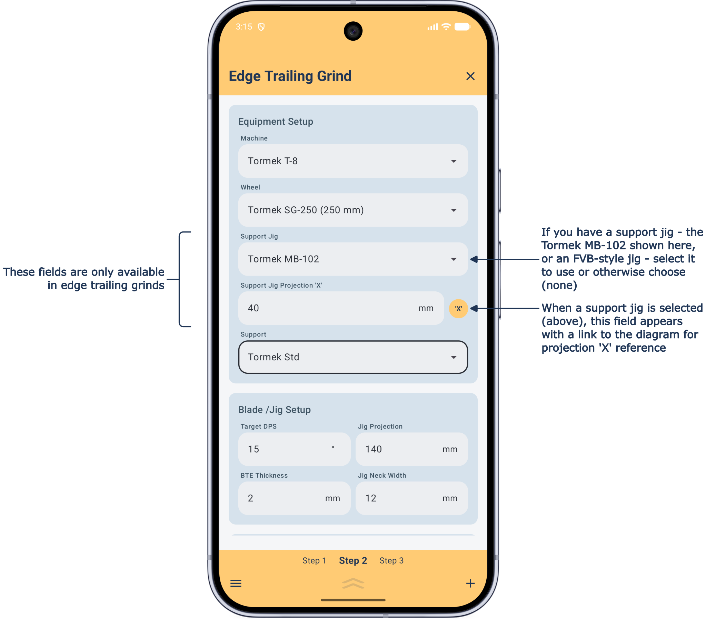
Supports
The adjustable bar that a blade jig rests on. Tap Tormek Std or Tormek Ext as many times as the number you own of each — both stay fully editable afterwards, so you can still fine-tune their measurements — or, for anything else, add a User support.
Other than for a flat-type grinder, we have incorporated a clear TOO HIGH FOR SUPPORT or TOO LOW FOR SUPPORT warning system (more on this below). For Tormek supports you'll get a gentler "Tormek Ext Support is Required" nudge if a standard support won't work in a setup, and you have an extended support — to keep this feature intact make sure to leave your Tormek support names as given, and add an identifier after the name if necessary.
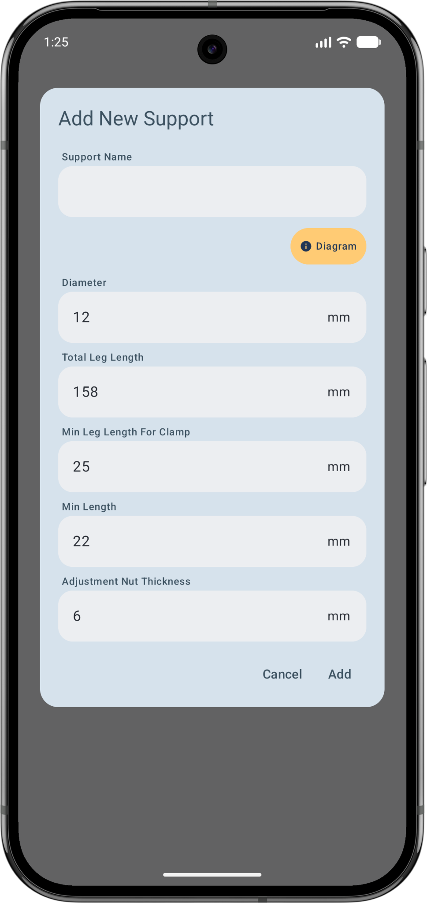
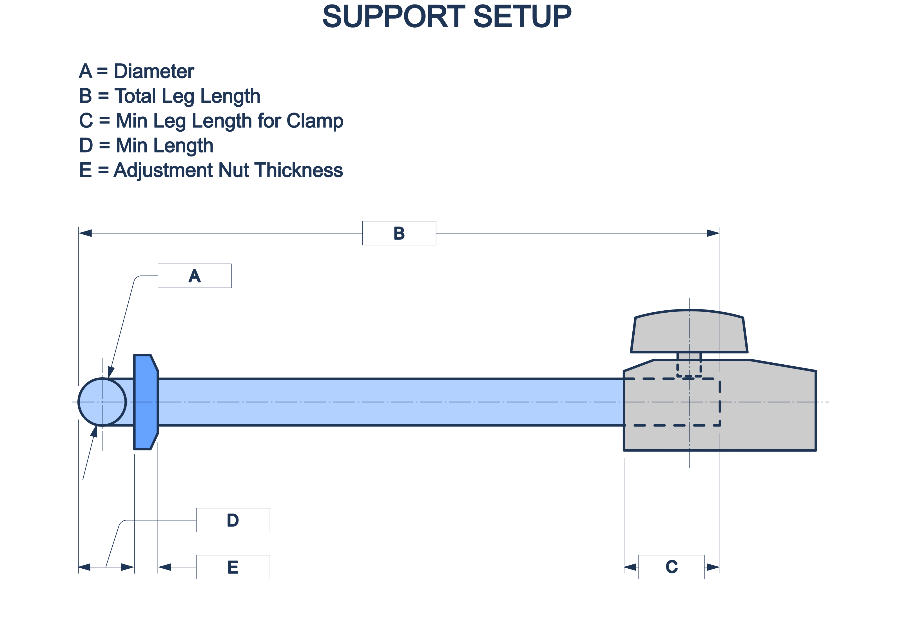
Five fields describe a support: Diameter (A), Total Leg Length (B), Min Leg Length for Clamp (C), Min Length (D), and Adjustment Nut Thickness (E) — the height of this support's own adjusting nut, from the clamp face to its top. This one is genuinely almost always non-zero (the default is 6mm, since the great majority of supports have a nut) — it's also the very thing that makes the nut, rather than the clamp face, this app's reference point for 'S'.
- Total Leg Length
- Min Leg Length for Clamp — the least acceptable clamp length you'd accept for a support anywhere on your machine
- Min Length — the lowest your support can physically go
Adjustment Nut Thickness doesn't change whether a warning triggers — that's still judged against your support's physical Min / Max Height either way — but it does change what 'S' itself reads, since 'S' already includes it.
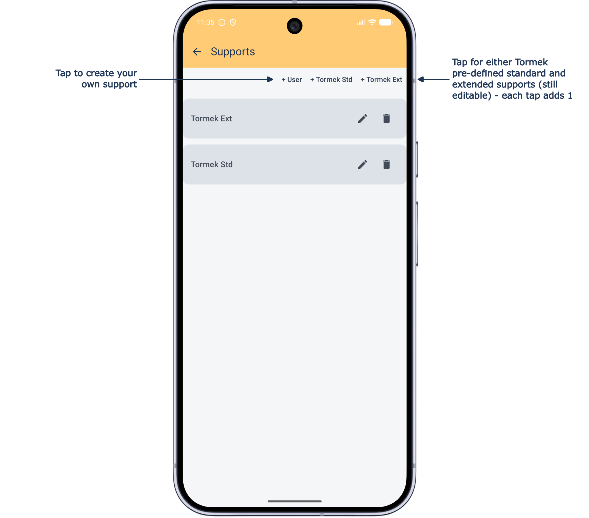
Tormek SE-77
Special provision is made for this jig, since it shares geometry usable on both wheel and flat-type grinders. If you have this jig, select "I own this jig" to activate it, then check and enter your measured offset dimensions. Selecting it on a grind step makes Jig Neck Width and Double Bevel unavailable — see Blade / Jig Setup and Grind Type in the Guide.

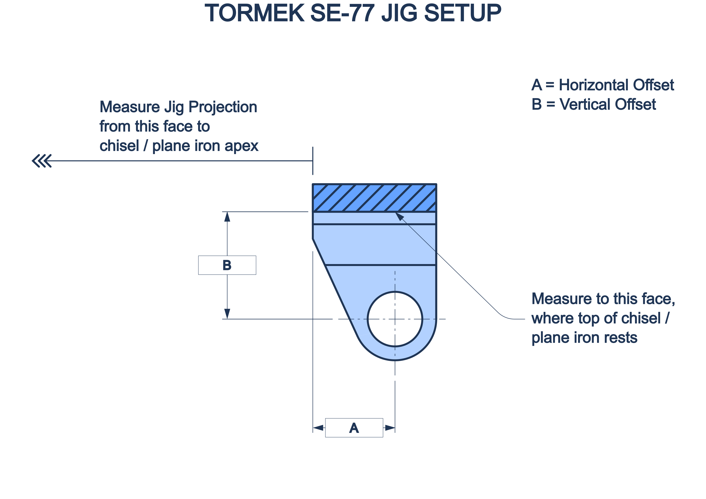
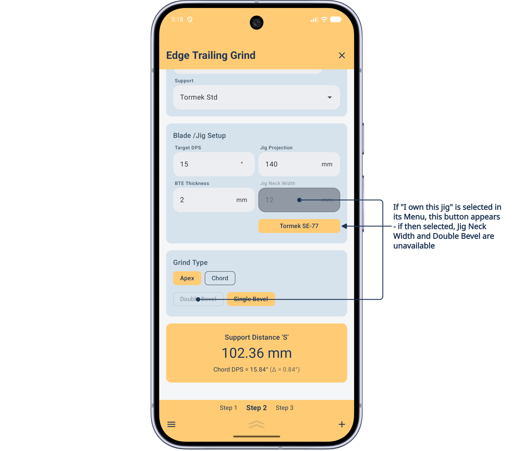